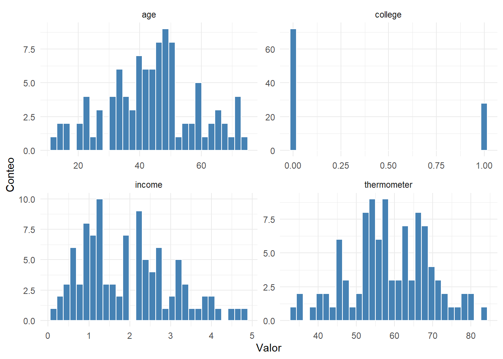
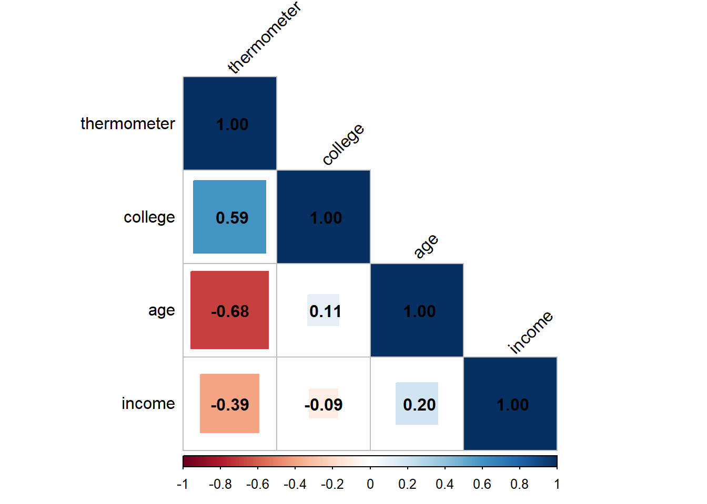
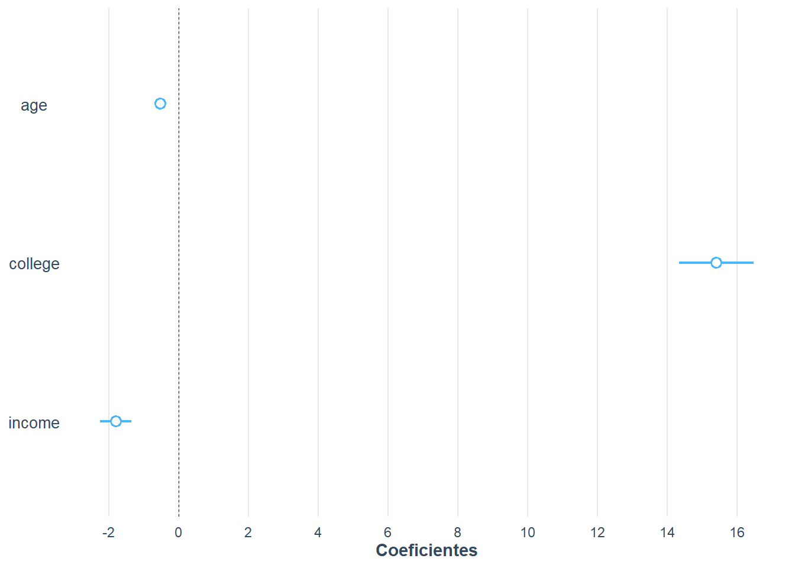
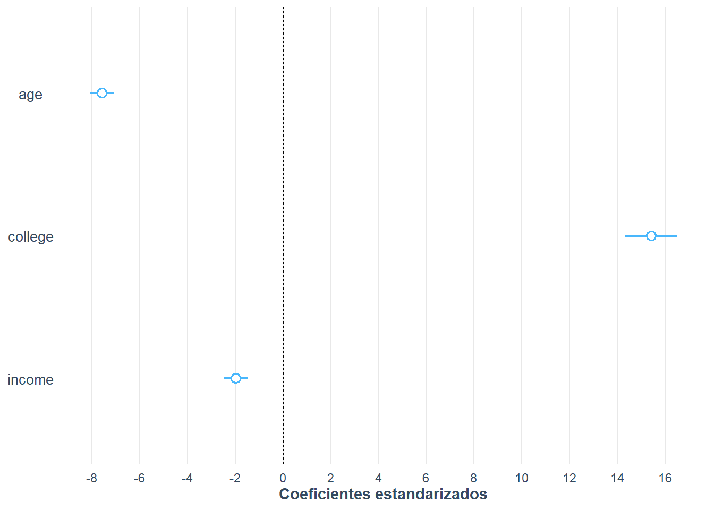
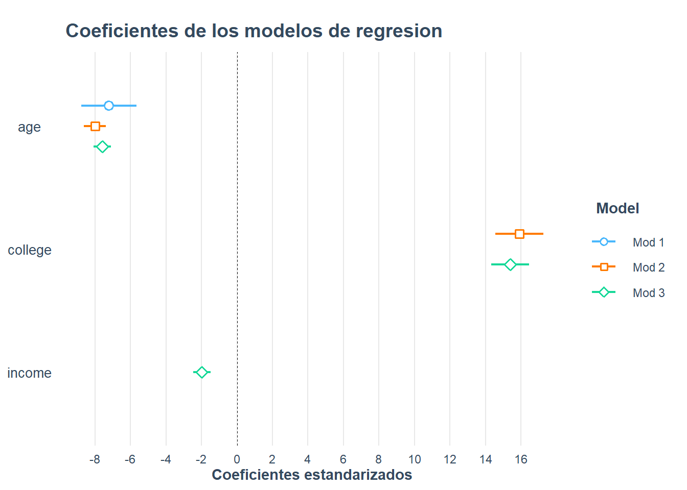
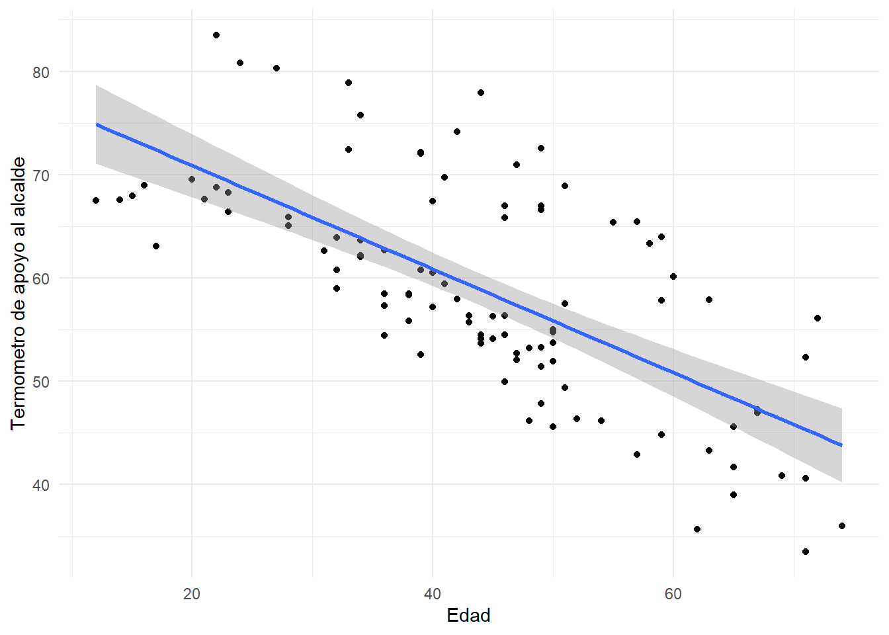

Capitulo 11 Regresion desde la simulacion y visualizacion de modelos
En el capitulo 9 estimamos modelos de regresion con datos reales de encuesta. El
problema es que, con datos reales, nunca sabemos cual es la verdadera relacion
entre las variables: solo vemos una muestra ruidosa. En este capitulo hacemos un
ejercicio muy didactico que retoma el curso CP-2007 ((Gomez Campos 2025)): jugamos a
ser la Naturaleza. Nosotros creamos los datos y, por lo tanto, conocemos de
antemano los coeficientes verdaderos. Luego estimamos el modelo con lm() y
comprobamos si recupera esos coeficientes. Tambien aprendemos a visualizar los
coeficientes de varios modelos con el paquete jtools. La referencia base es
Vargas ((Vargas 2016)) y (Gujarati and Porter 2011).
11.1 Crear los datos “como en la naturaleza”
Supongamos que queremos explicar el apoyo de una persona al ejecutivo o alcalde local. La variable dependiente es un termometro de sensacion que va de 0 a 100, donde valores mas altos indican opiniones mas favorables. Los predictores son:
-
age: edad, variable continua distribuida normalmente; -
college: variable dicotomica (1 si la persona obtuvo un titulo universitario); -
income: ingresos en miles de dolares, con un ligero sesgo positivo.
# Fijamos la semilla para que el ejercicio sea replicable
set.seed(333)
# Edad: normal con media 45 y desviacion estandar 15
age <- as.integer(rnorm(100, 45, 15))
# Universidad: binomial, probabilidad 0,3 de tener titulo
college <- rbinom(100, 1, 0.3)
# Ingresos (miles de dolares): distribucion beta con sesgo positivo
income <- 10 * rbeta(100, 2, 8)
head(data.frame(age, college, income))
age college income
1 43 0 2.4427731
2 74 0 3.1663986
3 14 0 3.2047044
4 49 1 1.1211726
5 22 0 0.2223342
6 40 1 2.2907541Ahora especificamos la relacion lineal que, en nuestro universo simulado, genera la variable dependiente:
\[termometro_i=\alpha+age_i\cdot\beta_1+college_i\cdot\beta_2+income_i\cdot\beta_3+\epsilon_i\]
Como somos la Naturaleza, elegimos los valores de los parametros: intercepto \(\alpha=80\), \(\beta_1=-0,5\) (cada ano adicional reduce el apoyo en medio punto), \(\beta_2=15\) (tener titulo universitario aumenta el apoyo en 15 puntos) y \(\beta_3=-2\) (cada mil dolares adicionales reduce el apoyo en 2 puntos). El error \(\epsilon\) se extrae de una normal con media 0 y desviacion estandar 2,5.
a <- 80
b1 <- -0.5
b2 <- 15
b3 <- -2
e <- rnorm(100, 0, 2.5)
# Variable dependiente
thermometer <- a + age * b1 + college * b2 + income * b3 + e
# Base de datos
mayor <- data.frame(thermometer, age, college, income)
head(mayor, 10)
thermometer age college income
1 56.34649 43 0 2.4427731
2 35.97210 74 0 3.1663986
3 67.54335 14 0 3.2047044
4 66.99035 49 1 1.1211726
5 68.79006 22 0 0.2223342
6 67.41089 40 1 2.2907541
7 57.89252 63 1 1.9091441
8 46.19084 54 0 3.0704284
9 55.01948 50 0 1.3260681
10 58.45784 36 0 3.3354371El primer paso de cualquier analisis es explorar los datos. Veamos el resumen de todas las variables y su distribucion.
summary(mayor)
thermometer age college income
Min. :33.48 Min. :12.00 Min. :0.00 Min. :0.1308
1st Qu.:52.65 1st Qu.:35.50 1st Qu.:0.00 1st Qu.:1.1096
Median :58.13 Median :45.00 Median :0.00 Median :1.8562
Mean :58.75 Mean :44.21 Mean :0.28 Mean :1.9668
3rd Qu.:66.68 3rd Qu.:51.00 3rd Qu.:1.00 3rd Qu.:2.7760
Max. :83.48 Max. :74.00 Max. :1.00 Max. :4.8085 Figura 11.1 Distribucion de las variables del modelo simulado

Figura 11.1. Distribucion de la variable dependiente y los predictores simulados
El termometro se mueve aproximadamente entre 30 y 90; la edad, entre 15 y 80; los ingresos, entre 0 y 5 (miles de dolares); y cerca de 70 personas no tienen titulo universitario. Nada raro, como corresponde a datos que nosotros mismos generamos.
11.2 Correlacion como paso previo a la regresion
Antes de estimar el modelo, conviene inspeccionar la matriz de correlacion. Una forma eficiente de hacerlo es con el paquete corrplot.
library(corrplot)
M <- cor(mayor)
round(M, 3)
thermometer age college income
thermometer 1.000 -0.681 0.595 -0.391
age -0.681 1.000 0.111 0.200
college 0.595 0.111 1.000 -0.093
income -0.391 0.200 -0.093 1.000
corrplot(M, method = "square", type = "lower", order = "hclust",
tl.col = "black", tl.srt = 45, addCoef.col = TRUE)
Figura 11.2. Correlograma de las variables del modelo simulado
Las correlaciones positivas se muestran en azul y las negativas en rojo; el tamano
del cuadrado es proporcional al coeficiente. La primera columna nos dice como se
relaciona el termometro con cada predictor: age tiene una correlacion negativa
fuerte (-0,68), college una positiva moderada (0,59) y income una negativa
debil (-0,39). Estas correlaciones ya anticipan la direccion de los coeficientes.
11.3 Estimar los modelos
La funcion lm() estima el modelo lineal. Especificamos la formula como
respuesta ~ predictor_1 + predictor_2 + .... Estimamos tres modelos de
complejidad creciente.
modelo1 <- lm(thermometer ~ age, data = mayor)
modelo2 <- lm(thermometer ~ age + college, data = mayor)
modelo3 <- lm(thermometer ~ age + college + income, data = mayor)
summary(modelo1)
Call:
lm(formula = thermometer ~ age, data = mayor)
Residuals:
Min 1Q Median 3Q Max
-14.129 -5.343 -2.420 7.237 19.091
Coefficients:
Estimate Std. Error t value Pr(>|t|)
(Intercept) 80.90042 2.53222 31.948 < 2e-16 ***
age -0.50107 0.05449 -9.195 6.77e-15 ***
---
Signif. codes: 0 '***' 0.001 '**' 0.01 '*' 0.05 '.' 0.1 ' ' 1
Residual standard error: 7.796 on 98 degrees of freedom
Multiple R-squared: 0.4631, Adjusted R-squared: 0.4577
F-statistic: 84.55 on 1 and 98 DF, p-value: 6.766e-15summary(modelo2)
Call:
lm(formula = thermometer ~ age + college, data = mayor)
Residuals:
Min 1Q Median 3Q Max
-8.6889 -1.8682 0.3394 2.1866 7.6208
Coefficients:
Estimate Std. Error t value Pr(>|t|)
(Intercept) 78.88907 1.00068 78.83 <2e-16 ***
age -0.55637 0.02159 -25.77 <2e-16 ***
college 15.91407 0.68783 23.14 <2e-16 ***
---
Signif. codes: 0 '***' 0.001 '**' 0.01 '*' 0.05 '.' 0.1 ' ' 1
Residual standard error: 3.069 on 97 degrees of freedom
Multiple R-squared: 0.9176, Adjusted R-squared: 0.9159
F-statistic: 540.4 on 2 and 97 DF, p-value: < 2.2e-16summary(modelo3)
Call:
lm(formula = thermometer ~ age + college + income, data = mayor)
Residuals:
Min 1Q Median 3Q Max
-5.3957 -1.7177 -0.1198 1.7001 7.4953
Coefficients:
Estimate Std. Error t value Pr(>|t|)
(Intercept) 81.27935 0.83337 97.531 < 2e-16 ***
age -0.52709 0.01718 -30.678 < 2e-16 ***
college 15.40291 0.53874 28.590 < 2e-16 ***
income -1.80067 0.22446 -8.022 2.55e-12 ***
---
Signif. codes: 0 '***' 0.001 '**' 0.01 '*' 0.05 '.' 0.1 ' ' 1
Residual standard error: 2.387 on 96 degrees of freedom
Multiple R-squared: 0.9507, Adjusted R-squared: 0.9492
F-statistic: 617 on 3 and 96 DF, p-value: < 2.2e-16Observa que los coeficientes estimados del modelo 3 (age = -0,527, college =
15,40, income = -1,80) son muy cercanos a los coeficientes verdaderos que
nosotros fijamos (-0,5, 15 y -2). Esto es exactamente lo que esperabamos: la
regresion recupera la relacion real cuando el modelo esta bien especificado. En
datos reales nunca podemos hacer esta comprobacion, porque no conocemos los
coeficientes verdaderos; la simulacion nos permite ver el mecanismo con claridad.
Ademas, a medida que agregamos predictores, la R cuadrada sube (0,46, 0,92 y 0,95) porque cada predictor verdadero aporta a la explicacion de la variable dependiente. En datos reales, recordar que la R cuadrada ajustada penaliza la inclusion de predictores inutiles.
11.4 Tablas comparadas con jtools
El paquete jtools produce tablas mas ordenadas que summary() y permite
comparar varios modelos en una sola tabla.
library(jtools)
export_summs(modelo1, modelo2, modelo3,
model.names = c("modelo 1", "modelo 2", "modelo 3"),
statistics = "all")| modelo 1 | modelo 2 | modelo 3 | |
|---|---|---|---|
| (Intercept) | 80.90 *** | 78.89 *** | 81.28 *** |
| (2.53) | (1.00) | (0.83) | |
| age | -0.50 *** | -0.56 *** | -0.53 *** |
| (0.05) | (0.02) | (0.02) | |
| college | 15.91 *** | 15.40 *** | |
| (0.69) | (0.54) | ||
| income | -1.80 *** | ||
| (0.22) | |||
| nobs | 100 | 100 | 100 |
| r.squared | 0.46 | 0.92 | 0.95 |
| adj.r.squared | 0.46 | 0.92 | 0.95 |
| sigma | 7.80 | 3.07 | 2.39 |
| statistic | 84.55 | 540.40 | 617.03 |
| p.value | 0.00 | 0.00 | 0.00 |
| df | 1.00 | 2.00 | 3.00 |
| logLik | -346.25 | -252.52 | -226.87 |
| AIC | 698.50 | 513.04 | 463.73 |
| BIC | 706.32 | 523.46 | 476.76 |
| deviance | 5956.92 | 913.83 | 547.08 |
| df.residual | 98.00 | 97.00 | 96.00 |
| nobs.1 | 100.00 | 100.00 | 100.00 |
| *** p < 0.001; ** p < 0.01; * p < 0.05. | |||
La tabla resume los tres modelos. Para interpretarla:
- las estrellas marcan los predictores estadisticamente significativos;
- el signo del coeficiente indica la direccion de la relacion;
-
r.squaredyadj.r.squaredindican que tan bien se ajusta el modelo; con varios predictores conviene mirar la R cuadrada ajustada.
11.4.1 Coeficientes estandarizados
Como los predictores estan en unidades distintas (anos, 0/1, miles de dolares), no
podemos comparar directamente el tamano de los coeficientes. Con
scale = TRUE, jtools estandariza los coeficientes a unidades de desviacion
estandar, lo que permite ordenarlos por importancia.
export_summs(modelo1, modelo2, modelo3,
model.names = c("modelo 1", "modelo 2", "modelo 3"),
scale = TRUE, statistics = "all")| modelo 1 | modelo 2 | modelo 3 | |
|---|---|---|---|
| (Intercept) | 58.75 *** | 54.29 *** | 54.44 *** |
| (0.78) | (0.36) | (0.28) | |
| age | -7.20 *** | -8.00 *** | -7.58 *** |
| (0.78) | (0.31) | (0.25) | |
| college | 15.91 *** | 15.40 *** | |
| (0.69) | (0.54) | ||
| income | -1.98 *** | ||
| (0.25) | |||
| nobs | 100 | 100 | 100 |
| r.squared | 0.46 | 0.92 | 0.95 |
| adj.r.squared | 0.46 | 0.92 | 0.95 |
| sigma | 7.80 | 3.07 | 2.39 |
| statistic | 84.55 | 540.40 | 617.03 |
| p.value | 0.00 | 0.00 | 0.00 |
| df | 1.00 | 2.00 | 3.00 |
| logLik | -346.25 | -252.52 | -226.87 |
| AIC | 698.50 | 513.04 | 463.73 |
| BIC | 706.32 | 523.46 | 476.76 |
| deviance | 5956.92 | 913.83 | 547.08 |
| df.residual | 98.00 | 97.00 | 96.00 |
| nobs.1 | 100.00 | 100.00 | 100.00 |
| All continuous predictors are mean-centered and scaled by 1 standard deviation. The outcome variable is in its original units. *** p < 0.001; ** p < 0.01; * p < 0.05. | |||
En el modelo 3, el predictor con mayor efecto estandarizado es age (-7,58),
seguido de college (15,40) y income (-1,98). Es decir, la edad es el factor que
mas pesa en el apoyo al alcalde.
11.4.2 Visualizar los coeficientes
La funcion plot_summs() representa graficamente los coeficientes con sus
intervalos de confianza, lo que facilita comparar modelos.
plot_summs(modelo3) +
labs(x = "Coeficientes", y = "") +
scale_x_continuous(breaks = seq(-2, 16, 2))
Figura 11.3. Coeficientes del modelo completo simulado
plot_summs(modelo3, scale = TRUE) +
labs(x = "Coeficientes estandarizados", y = "") +
scale_x_continuous(breaks = seq(-8, 16, 2))
Figura 11.4. Coeficientes estandarizados del modelo completo
plot_summs(modelo1, modelo2, modelo3,
model.names = c("Mod 1", "Mod 2", "Mod 3"), scale = TRUE) +
labs(x = "Coeficientes estandarizados", y = "",
title = "Coeficientes de los modelos de regresion") +
scale_x_continuous(breaks = seq(-8, 16, 2))
Figura 11.5. Coeficientes estandarizados de los tres modelos
11.4.3 La recta de regresion
Finalmente, podemos visualizar la relacion entre el termometro y la edad, con su recta de regresion.
Figura 11.6 Relacion entre edad y apoyo al alcalde (datos simulados)

Figura 11.6. Diagrama de dispersion del termometro segun la edad
A medida que aumenta la edad, el apoyo tiende a bajar: la pendiente negativa que nosotros mismos fijamos en la simulacion aparece con claridad.
11.5 Conexion con los datos del CIEP
El mismo flujo de trabajo (explorar, correlacionar, estimar, comparar y estandarizar) es el que se aplica a los datos reales del CIEP en los capitulos 9 y 10. La unica diferencia es que, con datos reales, no conocemos los coeficientes verdaderos y debemos apoyarnos en la teoria, la significancia y la R cuadrada ajustada para juzgar nuestros modelos.
11.6 Resumen
- Simular datos permite conocer los coeficientes verdaderos y comprobar que la regresion los recupera.
- La matriz de correlacion (
corrplot) es un paso previo util a la regresion. -
lm()estima el modelo; la R cuadrada (ajustada) mide el ajuste. -
export_summs()yplot_summs()(paquete jtools) producen tablas y graficos comparados de varios modelos, incluidos los coeficientes estandarizados.